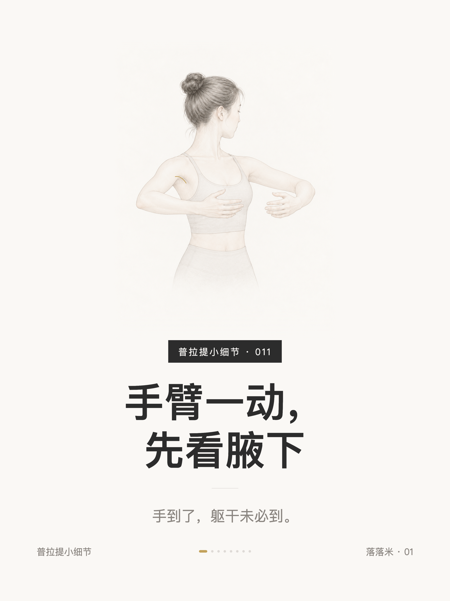
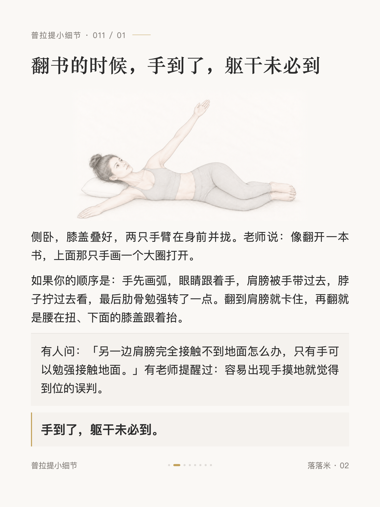
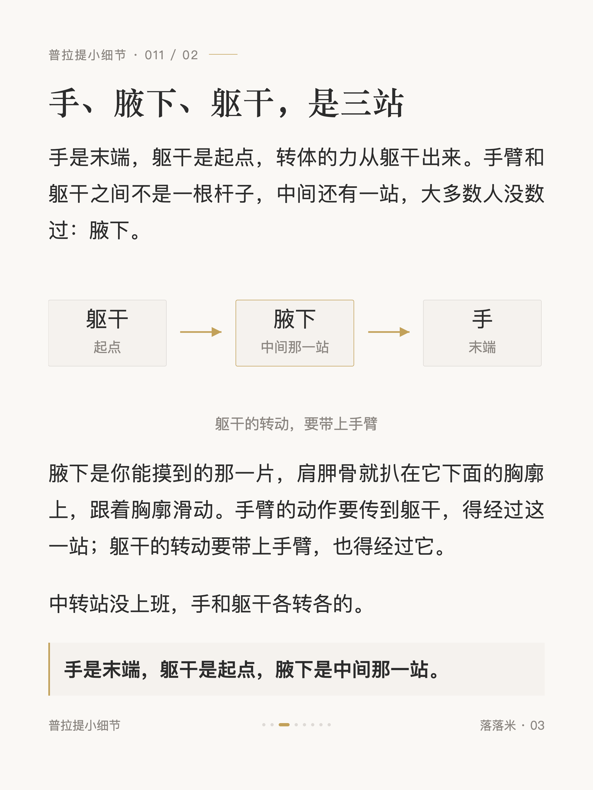
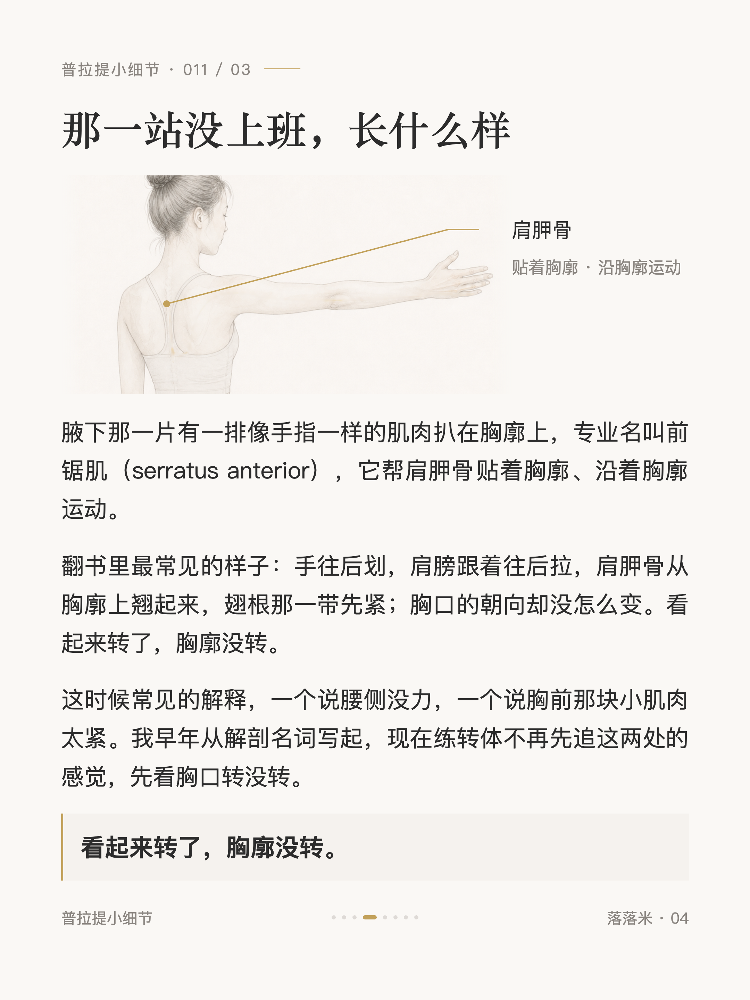
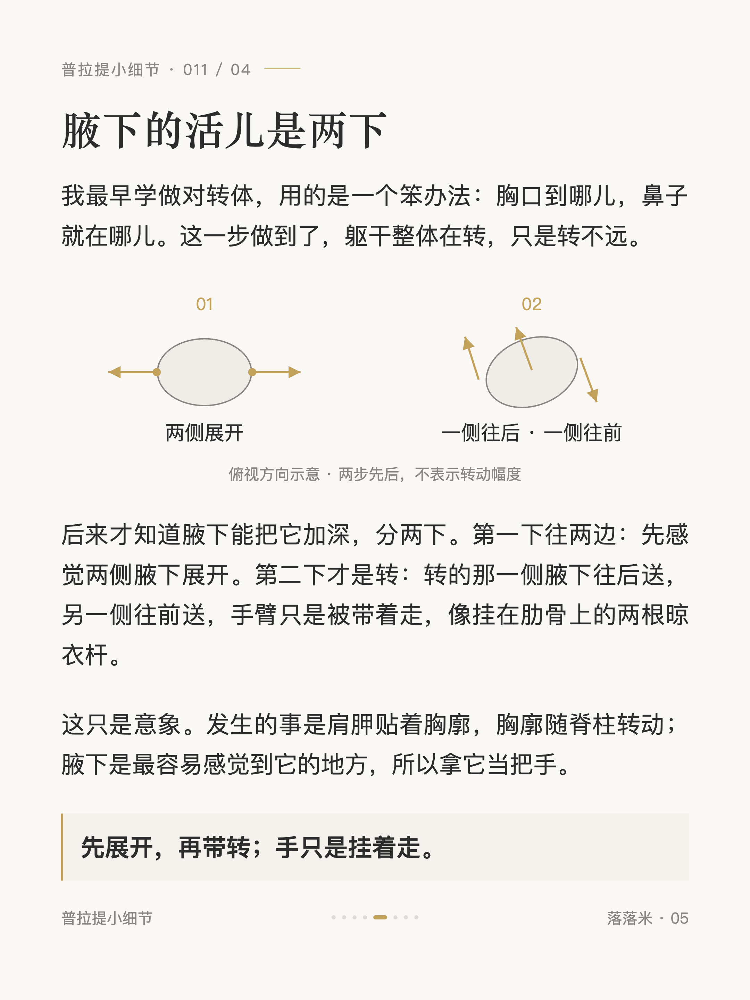
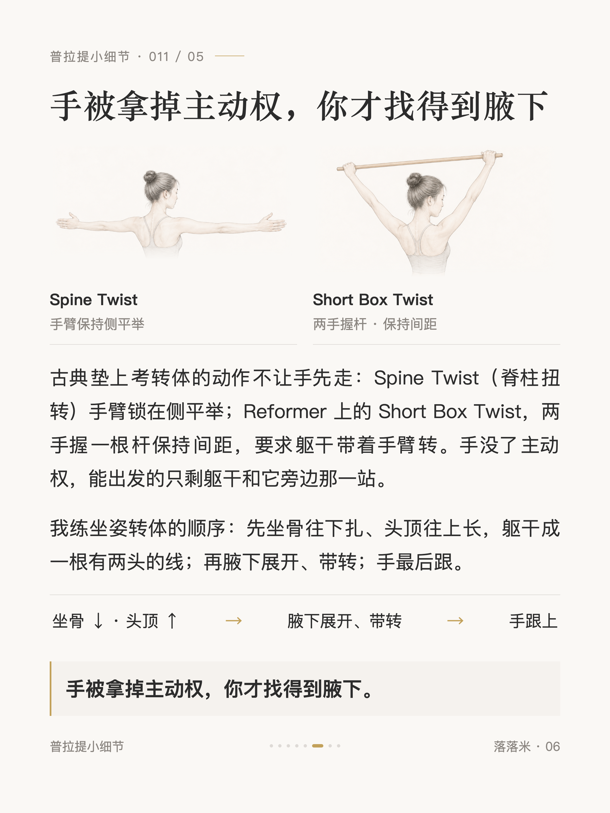
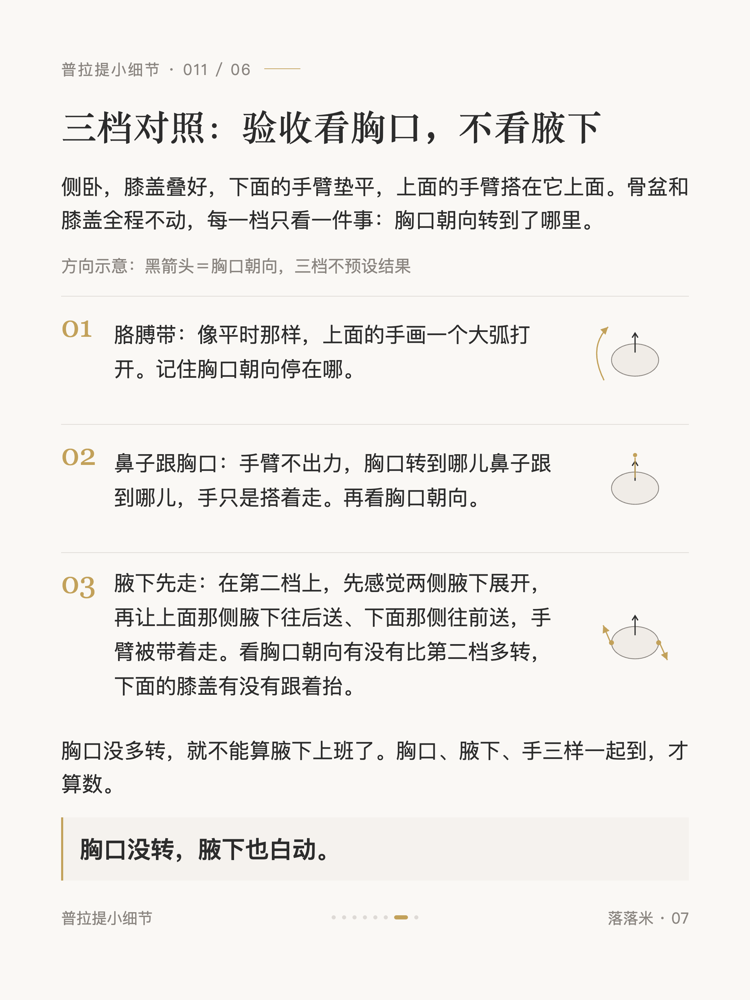
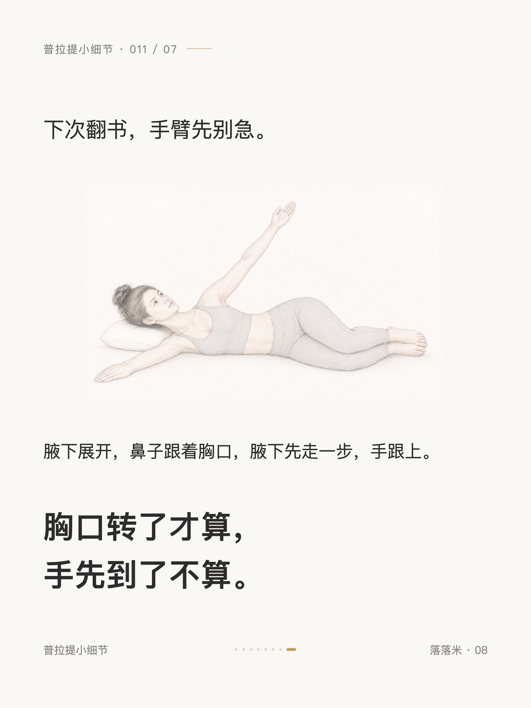

普拉提小细节 #011
普拉提手臂一动，先看腋下

1 / 8

2 / 8

3 / 8

4 / 8

5 / 8

6 / 8

7 / 8

8 / 8
← 左右滑动浏览全部卡片 →
翻书翻到肩膀就卡，很多人去怪胸椎僵或者柔韧差。这篇讲手臂和躯干之间被跳过的那一站：腋下。手是末端，躯干是起点，中间那一站没先动，手臂画的弧再大躯干也不转。文末有一个侧卧三档对照，今晚就能试。